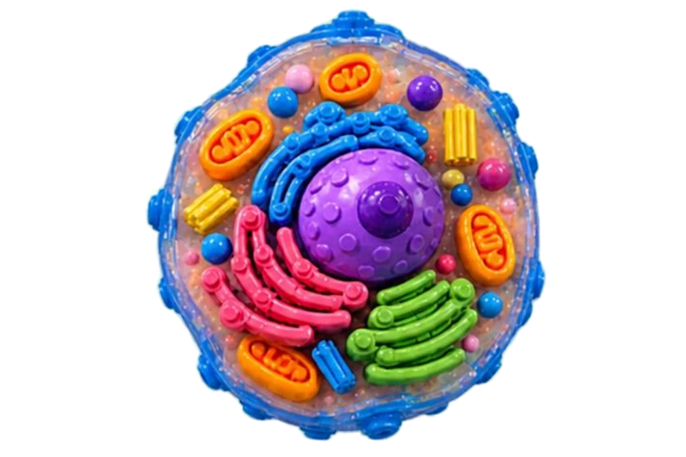

🔬 Célula Animal LEGO Interativa
Museu Dinâmico Interdisciplinar — MUDI • Explore, gire e descubra!
Ângulo 0°

↔ Arraste para girar • dois dedos para ampliarToque e arraste sobre a célula para explorar seus oito ângulos.
🧬 Descubra as organelas
Toque no nome para conhecer sua função.
Escolha uma organela para começar.
⭐ Desafio científico
Qual organela é especialmente importante na produção de ATP durante a respiração celular?
Rotação visual feita com 8 imagens fornecidas para o projeto. Não é um modelo volumétrico 3D.